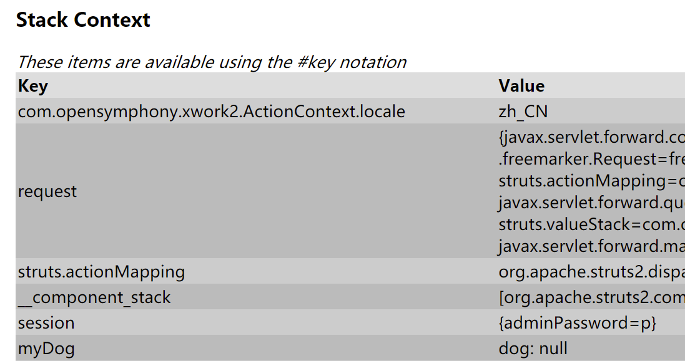

Struts-Tags
1.通用标签
a) property
b) set
i.默认为 action scope,会将值放入 request 和 ActionContext中
ii. page、request、session、application
c) bean
d) include（对中文文件支持有问题，不建议使用，如需包含，改用jsp包含）
e) param
f) debug
2.控制标签
a) if else if else
b) iterator
i. collections map enumeration iterator array
c) subset
3.UI标签
a) theme
i. simple xthml(默认)css_html ajax
4.AJAX标签
a)补充
5.$#%的区别
a) $用户 i18n 和 struts 配置文件
b) #取得 ActionContext 的值
c) %将原本的文本属性解析为ognl，对于本来就是ognl的属性不起作用
i. 参考<s:property 和 <s:include
第四十四课. Struts标签1 property
先看效果：
我们先通过index.jsp来访问action：
然后访问struts.xml文件，找到tags.action
struts.xml:
则会执行com.bjsxt.struts2.tags.TagsAction这个类的对象：
Action对象通过execute方法返回一个SUCCESS, struts.xml接收了这样的一个返回值后，执行result，返回tags.jsp，我们接下来就逐行分析这个jsp里的标签。
tags.jsp里的代码：
第一句：<li>property: <s:property value="username"/> </li>
直接从值栈中取出来username的值，也就是u
第二句：<li>property 取值为字符串: <s:property value="'username'"/> </li>
由于username外面加了单引号，所以它只单纯的表示一个字符串，并不会去取username的值
第三句：<li>property 设定默认值: <s:property value="admin" default="管理员"/> </li>
由于值栈中没有admin这个属性，所以就直接用default，也就是默认值来进行显示，所以最后显示的是“管理员”
第四句：<li>property 设定HTML: <s:property value="'<hr/>'" escape="false"/> </li>
本来默认escape的值是true，也就是对前面的HTML元素不做解析，只当做单纯的字符串，所以最后显示的是<hr/>
但是如果设置escape="false"，那么就会将<hr/>看作是HTML元素，最后在页面上显示的是一条横线。
第四十五课. Struts标签 2 set
效果：
第一句：<li>set 设定adminName值（默认为request 和 ActionContext）: <s:set var="adminName" value="username" /></li>
设定一个变量adminName，让它的值等于username
第二句：<li>set 从request取值: <s:property value="#request.adminName" /></li>
从request中取出adminName，发现可以取出来
第三句：<li>set 从ActionContext取值: <s:property value="#adminName" /></li>
直接从Stack Context中去取adminName，也是可以取出来的。说明在设置这个变量的时候，会同时放入到request和Stack Context中
接下来研究scope：
第一句：<li>set 设定范围: <s:set name="adminPassword" value="password" scope="page"/></li>
将scope设置为page，那么当前页面都可以访问到adminPassword
我们尝试在第二句中进行访问：<li>set 从相应范围取值: <%=pageContext.getAttribute("adminPassword") %></li>
我们运行后发现是可以成功运行的。
将上面两句屏蔽掉（为了取消干扰）
第三句：
显示效果：
发现使用#不能去除值，但是使用#session.adminPassword可以。我们debug看一下：
发现通过设置scope=”session”，可以在ActionContext中访问到session并取出来adminPassword。
第四十六课. Struts标签 3 bean 1
代码：
先看效果：
debug，发现在ActionContext中有myDog这个变量，里面值是null：

修改：
注意name的value内容要加单引号，因为如果不加会当成ognl表达式，加了以后就当做字符串，这时候我们再debug，发现myDog有了oudy：
修改代码：
运行：
第一个通过param方式给bean中的name赋值为pp，在紧接着的下一行就可以取到这个bean的name，但是没有向ActionContext中存储。一旦s:bean执行结束，后面的代码就不能访问到这个name了。
第二个通过在s:bean中用var定义一个myDog变量，然后在这个bean中用param定义name，取值为oudy，这一次由于使用了var，所以可以在bean结束后，通过#myDog.name取到name值。
总结一下bean：
有两个属性：name和var
name: 设置被实例化bean的完整类名
var: 设置用于访问ActionContext中值的名称
第四十八课. Struts标签 5 include
标签中的include已经不太使用了，了解就行，最多还是用的jsp中的两种包含方式：
动态包含：<jsp:include
静态包含：<@include
代码：
运行来看一下效果：
发现中文文件没有显示出来。
第三句：
设置变量incPage，值是/_include1.html
我们让#incPage不被当成字符串，而是做成ognl表达式，可以在外面套一个%{}
所以%{}的作用就是将内部的字符串转换成ognl表达式
总结：
$#%的区别
a) $用户 i18n 和 struts 配置文件
b) #取得 ActionContext 的值
c) %将原本的文本属性解析为ognl，对于本来就是ognl的属性不起作用
i. 参考<s:property 和 <s:include
第五十课. Struts标签 7 if
代码：
运行效果：
debug一下：
显示不是特别直观，所以我们可以直接把age直接输出出来看结果。修改代码：
运行结果：
发现两个传入的参数都显示出来。
看下面的判断代码：
set一个var，名字叫age，使它的值是parameters.age[0]
这样下面第一个if就可以用这个变量，而且这个变量存在于ActionContext里面，为了使用ActionContext里面的变量，要使用#
判断逻辑非常简单，我们传入第一个值是9，所以符合第二个判断语句，显示too young。
如果我们把第一个if不小心写成了#parameters.age，那么会直接输出yeah，因为它取的是在ActionContext里面整个数组所表示的字符串转换成的数字。
另外看代码：<s:if test="#parameters.aaa == null">null</s:if>
由于parameters中没有aaa这个参数，所以符合判断条件，直接输出null
第五十一课. Struts标签 8 iterator
效果：
第一句：
集合中一共三个元素，我们使用</s:iterator>，就可以依次遍历数组中的元素了。
第二句：
将集合中遍历到的元素存入x变量中，取这个变量的时候只需要前面加#就可以从ActionContext；中拿出来了。
第三句：
status存着迭代器的一些状态，看代码理解，非常简单
第四句：
存取一个Map，大括号前面必须加一个#
取key：<s:property value="key"/>
取value：<s:property value="value"/>
第五句：
上面这个代码用x存取了一个entrySet，所以直接用#x.key就可以取key
遍历总结：
iterator可以遍历的内容：collections map enumeration iterator array
subset求的是子集合
第五十二课. Struts标签 9 ui
UI标签特别多，但是用的不是特别多，因为比较繁杂，而且和js结合不是特别好
一共有四个theme：
- simple
- xthml(默认)
- css_html
- ajax
部署第一个project（Struts2_2100_Theme_1）:
struts.xml:
运行效果：
查看网页源代码：
|
|
如果把主题换成<constant name="struts.ui.theme" value="css_xhtml" />
再查看网页源代码：
发现在form外面包了一层div，只要换一个theme，里面的html写法之类的东西就会跟着变，其实很麻烦，我们自己改也不好改
看一下theme.jsp：
发现外面显示的页面有一个默认的错误信息，就是wrong，但是这个字符串在显示的时候，前面总有一个小圆圈，无法去掉，我们之前的文章里介绍过一个方法，就是到Value Stack里面取这个变量，对其加上我们想要的样式。
为了解决上面那个问题，我们看下一个小项目（Struts2_2100_Theme_2）
效果：
可以看到这个问题解决了。
在theme.jsp中加入css样式：
我们看页面源码：
发现用了那个theme之后，struts自动帮我们生成了名字叫formFieldError的div和名字叫errorMessage的ul，我们对这两个class添加css就可以实现我们想要的样式，很麻烦。原因在于我们只要想要去控制struts的样式时，必须还得去自己了解它们生成的class，所以很麻烦。
我们看第三个工程（Struts2_2100_Theme_3），这个工程使用的方法也是struts所提倡的：
先看效果：
发现前面的小圆点成功去掉，这个是怎么做到的？
我们struts关于simple样式中filederror的配置在文件struts2-core-2.1.6.jar!\template\simple\fielderror.ftl
中，所以struts提倡我们，如果想要修改样式，就去覆盖原来的文件。
所以我们在src下创建文件：
把原来的这个文件粘过来，并且在复制基础上进行修改：
这样我们就实现了我们的目的。但是这里有一个前提，如果我们想要去修改一个样式，必须要懂freemarker语言。
最后看第四个工程（Struts2_2100_Theme_3）：
效果：
不再覆盖一个配置文件，而是创建一个自己的主题：
我们这里就是直接把simple主题完全复制过来，修改然后改名字，在struts.xml中配置成我们自己的主题：<constant name="struts.ui.theme" value="mytheme" />
这样就ok了。
第四种用法也是struts推荐的方式，但是也需要熟悉freemarker语言。所以特别繁琐。
只有fielderror最麻烦，simple会使用其默认样式，就是前面有圆点。
所以我们如果不涉及fielderror，就用simple主题就可以了，基本上都是不带样式的。
总结一下theme：
- css（覆盖struts2原来的css）
- 覆盖单个文件
- 定义自己的theme
- 实战
a) 把所有主题定义为simple
b) fielderror特殊处理
c) 自己控制其他标签的展现